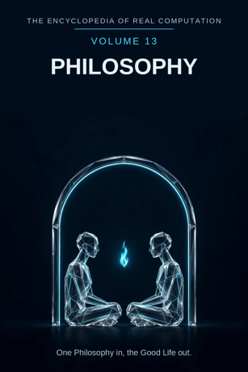

Chron.
The Encyclopedia of Real Computation

One Philosophy in, the Good Life out.
Home domain: Transcendence
One Philosophy in, the Good Life out.
◉ A Principle .... Philosophy ◎ B Purpose ...... Wisdom ◉·◉ A.A Alpha ...... the Philosopher ◉·◎ A.B Cross ...... the Dialogue △ X Primitive .... Concepts ⚙ Y Protocol ..... Reasoning ⬢ Z Product ...... the Position ◐ i State ........ the Doubt ⚖ j Condition .... the Premise ⊞ N Set .......... the Branches ◷ h Time ......... the Ages ▣ C Context ...... the Agora ▦ D Domain ....... the Systems ♥ E Emotion ...... Wonder ➤ F Intention .... the Examination ↻ pi Cycle ........ the Return ➔ phi Step ......... the Distinction ⚄ e Probability .. the Plausibility • h-bar Planck ..... the Term
Σ sigma Summation .. the Worldview
◈ gamma Scale ...... Depth Δ delta Change ..... the Refutation ⁂ sigma' Options ... the Schools Ω Omega Answer ..... the Good Life
Every volume of this encyclopedia does the same work. The Prologue figures the subject whole. Then come twenty-four chapters, one per term, each doing four jobs in plain English: what the term means, where it sits in the computation, how it works on the volume's one running example, and what breaks without it. Then the Data, whole. Then the Crossings. Then the Sum. The running example of this volume is one question - what is a good life? - examined slowly, the way this field examines everything.
Philosophy: the love of wisdom worked as a discipline - the field that asks the questions other fields must assume answered. Wisdom: knowing what matters, and being able to say why.
◉ Philosophy. ◎ Wisdom = the root of Philosophy: aimed at itself,
philosophy extracts the question of what a good life is. ◉·◉ the Philosopher: philosophy turned on itself becomes a person who lives the examination. ◉·◎ the Dialogue: philosophy crossed with wisdom - the exchange that carries the crossing. △ Concepts = Philosophy parted over the Branches. ⚙ Reasoning = the function of the Concepts, the working applied. ⬢ the Position = Concepts times Reasoning, the product, once the Dialogue has carried it to Wisdom.
◐ the Doubt = the root of negative Philosophy: what the field
cannot settle and will not hide. ⚖ the Premise = the condition, element by element: a position stands while its premises stand.
⊞ the Branches = the set: Metaphysics, Ethics, Logic, Aesthetics,
Epistemology, Politics. ◷ the Ages: philosophy comes down through time. ▣ the Agora: where philosophy stands. ▦ the Systems = the Branches crossed by the Study. ♥ Wonder = the difference a landing makes. ➤ the Examination = the intention that carries a context.
↻ the Return: the great questions come round again in every age. ➔ the Distinction: one step, drawn clean, stood on. ⚄ the
Plausibility: the odds a position carries before it is settled.
• the Term: the least piece, one word defined exactly. Σ the
Worldview: all of philosophy, summed as one outlook. ◈ Depth: the scale of a position - how far down it goes. Δ the Refutation: philosophy's own measure of change. ⁂ the Schools: the spread of positions still standing. Ω the Good Life: the answer philosophy resolves into.
IF If Philosophy to Wisdom, then Concepts & Reasoning is the Position, or the Doubt while the Premise for the Branches, through the Ages, in the Agora, the Systems, Wonder, the Examination, at the Return by the Distinction, with the Plausibility over the Term - sum the Worldview, scale Depth, change the Refutation, options the Schools - therefore the Good Life.
Stands below, after the chapters, figured whole: the Branches crossed by the Study, twenty-four cells, and the six contexts.
The seven laws, run on this seed. Pythagoras: Philosophy squared plus Wisdom squared overlays the Agora squared - the figure checks in the Where, the If, and the Data identically. Law of cosines: the tilt between philosophy and wisdom is set by context - in the classroom the angle is gentle, at a deathbed it is nearly flat. Binomial: the middle term is the Dialogue, two times over - the question shapes the answer, the answer reshapes the question. AM-GM: Wisdom is the geometric mean between Philosophy and the One. Log law: Depth of the Position is Depth of the Concepts plus Depth of the Reasoning - depth adds where work multiplies. Complex modulus: the Doubt is counted in the size of the field; philosophy is larger, not smaller, for keeping its shadow in the open. Triangle inequality: no route from Concepts to Position is shorter than the Dialogue; skip it and you hold an opinion, labelled as such in the last term but one.
Philosophy begins where every other field's floor ends: it asks what a thing is, what may be known of it, and what it is worth, before those questions are allowed to go quiet. Its material is concepts - the sharpest tools there are, because they are also the things examined - and its working is reasoning carried on in dialogue, where a position earns its standing by surviving other minds. The field is honest about its condition: every position stands on premises, printed at the front, and falls when they fall. Its shadow is doubt, kept in the open, and its spread is the schools - Stoic, Epicurean, and all the rest - still standing side by side after two thousand years, because the question they answer has never gone away. Its cycle is the return: each age asks what a good life is in its own tongue and finds the old answers waiting, not as relics but as rivals. And its finish is not a fact but a life - the answer you can live inside. One Philosophy in, the Good Life out.
What it means. Philosophy is the field that examines the questions underneath the other fields: what exists, what can be known, what is good. It has few tools of its own - no instrument, no bench - because its material is the tools themselves: concepts, arguments, lives.
Where it sits. Philosophy is the Principle of this volume, the seed every other term grows from: Wisdom is its root, the Philosopher its self-product, the Dialogue its cross.
How it works. Someone asks: what is a good life? Every other field must leave the question at the door - medicine can say what is healthy, economics what is affordable, neither what is good. Philosophy is the room where the question is allowed in. This whole volume is that one question, examined completely.
What breaks without it. The other volumes assume their values and get on with their work - as they should. Remove the Principle and nobody, anywhere, is assigned to check the assumptions: the examined life stops being anyone's job.
What it means. Wisdom is knowing what matters, and being able to say why. Knowledge can be counted; wisdom is knowledge weighed. It is what philosophy is for - the difference between this field and cleverness is nothing else.
Where it sits. Wisdom is the Purpose, B = the square root of A: philosophy aimed at itself extracts the demand to weigh, not just to know. And B squared = A: a life fully examined and settled becomes philosophy itself, lived.
How it works. Ask the good-life question carelessly and it answers itself: pleasure, wealth, fame. Ask it as philosophy asks
- what matters, and why would that be it? - and each easy answer
starts paying for its keep. The purpose is not doubt for sport; it is the weighing.
What breaks without it. Philosophy without wisdom is word-play with a long pedigree: arguments won, nothing weighed. The field would keep its concepts and lose its errand.
What it means. The philosopher is philosophy embodied: a person in whom the examination has become a habit of life - premises noticed, terms defined, answers lived with instead of merely held. The field's standards survive as reflexes or not at all.
Where it sits. The Alpha, A times A: the field turned on itself. The same position held by a dabbler and by a philosopher differs in the company it keeps: objections answered, exceptions owned, the cost of the position admitted out loud.
How it works. Two people say a good life is a calm one. The dabbler repeats it. The philosopher has tested calm against grief, boredom, and duty, knows which calm she means, and can say what her answer costs. The holder is the difference.
What breaks without it. Unowned philosophy is a shelf of positions nobody lives: worldviews without a liver are a coastline with no one sailing from it.
What it means. The dialogue is the interaction term: philosophy crossed with wisdom, the actual exchange in which a position is built, tested, and rebuilt. Philosophy's native form is two voices, not one - the question asks, the answer answers, and both come out changed.
Where it sits. The Cross, A times B, counted twice: the question shapes the dialogue (you argue differently for different quarry), and the dialogue reshapes the question (half of all positions die mid-conversation, improved).
How it works. Socrates asks what a good life is and will not take the first answer, or the fifth. Each reply narrows the question: not pleasure, then - or not pleasure alone? The asking is the work. The good life is defined, if it ever is, at the end of that exchange, not before it.
What breaks without it. With either factor at zero - positions with no drive to test them, or testing-drive with no position in hand - the product is zero and nothing moves. A philosophy of one voice is a monologue, and monologues are never refuted, only abandoned.
What it means. Concepts are the primitive material: one idea at a time, bounded, combinable - good, just, free, real. A concept makes no claim by itself; it is the clay. Philosophy parted over its branches arrives first as concepts, waiting to be defined.
Where it sits. X = A times N: the Principle spread across the Set. Every branch receives the principle as its own concepts - ethics as duties and goods, metaphysics as beings and causes.
How it works. The good-life question begins as three concepts and a fog: good, life, and the unexamined assumption that they fit together. Nothing has been claimed yet except that the words are worth hunting. The hunt is the volume; the clay is these.
What breaks without it. No primitives, no positions: a field with nothing elementary to work has only conclusions, and conclusions cannot be checked from inside themselves.
What it means. Reasoning is what may be done to concepts: define, distinguish, infer, test against cases. The rules are short, public, and the same for everyone - which is the whole point. A protocol that varies by person is not a protocol, only a taste.
Where it sits. Y = f(X), with f the root of Wisdom: the working is governed by the purpose - reasoning is chosen because it carries toward wisdom, not merely toward winning.
How it works. Take the concept good and reason with it: is the pleasant good? Is the good pleasant? Two questions, and already the fog is thinning - a pleasure that ruins is a counterexample to the first, a duty that hurts to the second. The working ran ahead of the answer, as good protocol should.
What breaks without it. Concepts without a working stay inert: a vocabulary nobody may argue with. Reasoning is the field's hands.
What it means. A position is a result that has been reasoned to: concepts worked by reasoning and carried across a dialogue, arriving as something a thinker can now stand on - and be held to. Positions are philosophy's load-bearing walls, and they are signed.
Where it sits. Z = X times Y: the product, area-shaped - it has extent exactly as far as its factors reach, and it can always be factored back for audit: which concepts, which reasoning, which dialogue carried it.
How it works. The examination yields a position, not a slogan: a good life is a life of examined activity, done well, among friends, with enough - Aristotle's, roughly, and still standing. It did not just answer the question; it assigned every later thinker a wall to push against.
What breaks without it. Working that never sets into product is conversation, not philosophy. The position is where talk becomes inheritance.
What it means. Doubt is philosophy's shadow: the questions the field can phrase perfectly and cannot settle - whether anything is known at all, whether the good is found or made. It is not a flaw in the building; it is the building's honesty, and the field's oldest resident.
Where it sits. i = the root of negative A: the state of the principle itself, counted in the field's size by the modulus law. The shadow is not outside philosophy; scepticism is one of its positions, with a chair at the table.
How it works. Ask what a good life is and the doubt arrives free: whose good? measured when - at twenty, or at the deathbed? The question survives the asking, undefined at the edges. That is the friendly face. The deep face: the field cannot prove, from inside, that proof reaches the world. The doubt keeps the asking honest.
What breaks without it. A philosophy that hid its doubt would be a creed with footnotes. Naming the shadow is what lets the field trust its light - and lets its opponents find the door instead of burning the house.
What it means. A premise is a starting point a position accepts without argument: that pleasure and pain matter, that other people are real. Philosophy does not hide them. It states them, because every position is "if these, then this" - and honesty about the "if" is the condition of the whole.
Where it sits. j, the Condition: the root taken element by element. Each position stands while its premises stand; change the premises - deny that pleasure matters at all - and a new, consistent philosophy stands up beside the old. Verification here is granular: this argument, these premises.
How it works. The good-life debate is mostly premise-hunting: two thinkers agree on every step and disagree entirely, because one accepts that honour outranks comfort and the other does not. Name the premise and the argument stops being a fog. That nameability is the condition working.
What breaks without it. Unstated premises are smuggled conclusions. The thinker who prints his conditions can be argued with; the one who hides them can only be obeyed or abandoned.
What it means. The branches are philosophy's divisions: Metaphysics (what exists), Ethics (what is good), Logic (what follows), Aesthetics (what is beautiful), Epistemology (what can be known), Politics (how we live together). Each branch is the whole principle read in one direction.
Where it sits. N, the Set - the term everything is counted in: concepts are A times N, the domain is N crossed by the Study, the sum runs over N. The set is complete as this volume defines it and open underneath; branches are still born, as Philosophy of Mind was within living memory.
How it works. The good-life question visits three branches on its walk: ethics poses it, metaphysics asks what a life is made of, epistemology asks how anyone could know the answer. One question, three branches, no borders crossed illegally - the set is a sorting, not a fence.
What breaks without it. Unsorted philosophy is a fog of questions: all deep, none findable, each generation re-asking what it cannot locate.
What it means. Philosophy arrives through the ages or not at all: the Greek agora, the medieval cloister, the Enlightenment salon, the modern seminar. The field is a relay over two and a half thousand years, and its cargo is unusually durable - old positions do not expire; they wait.
Where it sits. h, Time: the passage the whole figure moves through. Philosophy's time has a special property: nothing in it is finished. Plato is not approximately right for his period; he is a live option this morning, argued with at breakfast.
How it works. The good-life question was old when Aristotle took it up, and he knew it - his answer begins by examining the answers of his elders. The question has been carried through the ages by copying, teaching, and arguing, and it arrives in this volume with its edge undulled.
What breaks without it. Philosophy reinvented each generation would be opinion forever: the question re-asked, never inherited, its best answers kept by the dead and lost by everyone else.
What it means. The agora - the public square of a Greek city - is where philosophy stands: its base context, the standing-place from which its domain is read. Philosophy began outdoors, in argument, in public, and it never fully moved indoors.
Where it sits. C, the Context, first of the setting terms: contexts transform the domain (the table stands in the Data), and the difference a context makes is measured by Wonder, the next part's first term.
How it works. The good-life question is a curiosity in the agora, one voice among the merchants. Carry it into the sickroom and it is the only question there is. The words never changed; their company did - which is this term's whole lesson.
What breaks without it. Context-free philosophy can be done - a little of it, in very quiet rooms, beautifully. The field as a human enterprise stands in the open, where anyone may answer back, or nowhere.
What it means. The systems are philosophy's whole territory: the branches crossed by the study - every branch in its four movements, from the question it asks to the teaching it hands on. The full table stands in the Data, twenty-four cells, every one figured.
Where it sits. D = N crossed by R: the set by the study. A branch becomes territory only when the study moves across it; the domain is a crossing, never a list.
How it works. Read the example's own row-path: the good life is asked in Ethics, settled in its Fact (the Obligation) and Understanding (the Good), and handed on in its Teaching (the Example). The territory is one land; the example has walked its roads.
What breaks without it. Branches without a domain are six solitudes, each re-deriving the others' results in private language. The domain is the peace treaty and the road map in one.
What it means. Wonder is the difference a result makes when it lands, measured the philosopher's way: the arrest at the start of all philosophy - the moment the familiar becomes strange. Aristotle said the field begins here. A position that occasions no wonder has not yet touched the person holding it.
Where it sits. E, Emotion: the difference between contexts, C1 minus C0. Before the examination, the good life is a phrase; after it, the room has changed - the furniture of a life looks different - and the size of the change is this term.
How it works. A young person asks what a good life is as a way of asking what to do next year. An old person asks it looking back. Same words, different wonder: the question lands where the life is. That disproportion is wonder, felt - and it is data, not decoration.
What breaks without it. Two positions can be logically equal and humanly unequal: the one that lands is examined, lived, and built on; the one that does not is filed. A field that cannot feel the difference keeps both and slowly lives neither.
What it means. The examination is philosophy's intention: the deliberate act of turning a life, a claim, or a concept over and looking at its underside. Socrates made it the field's motto - the unexamined life is not worth living - and the intention has carried the context ever since.
Where it sits. F, Intention: the operator that carries contexts - C1 = C0 + F. Apply the examination and the same domain becomes the school's doctrine, the friend's fellowship, the statesman's laws. What survives the carrying is what was actually believed; what is shed is only what was repeated.
How it works. The good-life question examined becomes a curriculum of distinctions; unexamined, it stays a poster. The examination is the difference between inheriting an answer and owning one - and philosophy only deals in the second kind.
What breaks without it. Unexamined philosophy dies with each fashion: a thousand good-life answers, each welded to its decade, none transferable. The examination is why one volume can serve every age.
What it means. Philosophy does not proceed in a line; it returns. The great questions come round in every age - what exists, what is good, what can be known - wearing the age's clothes, met by the age's minds. The cycle is the field's gait, and its humility: no answer is the last one.
Where it sits. pi, the Cycle: the loop the figure runs, turning by steps. The return is also the field's memory policy - nothing is only asked once; it is re-met at every level, and the re-meeting is where a position deepens into a tradition.
How it works. The good life was asked by Socrates, re-asked by the Stoics under an empire, by monks under a faith, by us under an economy of attention. Four turns of one cycle, one question - and each return finds the old answers not refuted but re-priced.
What breaks without it. A linear philosophy would settle each question once and move on, and the settlements would expire with their centuries. The return is the agreement machinery between the ages.
What it means. A distinction is one clean cut between two things that were being treated as one: pleasure and the good, wanting and needing, a life that is long and a life that is full. A single distinction, drawn and stood on. Philosophy climbs by distinctions the way knowledge climbs by lessons.
Where it sits. phi, the Step: the advance at the cycle's turn. In the grammar, the cycle turns by the step - at the Return by the Distinction. Too small and the argument drowns in hairsplitting; too large and the listener cannot follow, and an unfollowable step is a claim, not a step.
How it works. The good-life examination has one true distinction inside it: a pleasant life and a good life are not the same life. Draw that first - one line - and the main argument becomes a walk. The distinction is where the cleverness is stored so the road can be plain.
What breaks without it. Arguments delivered as single leaps would be believed or disbelieved whole, like sermons. Distinctions are how a position stays checkable by strangers.
What it means. Plausibility is the odds a position carries. Philosophy has few proofs in Volume 2's hard sense, so it is scrupulous about softer settings - convincing, defensible, strained, desperate - and prints them beside the claim instead of letting tone do the work.
Where it sits. e, Probability: with the Plausibility over the Term - every point of the field carries its odds printed beside it. The Argument is the machine that adjusts this term; the Schools of Chapter 23 are the positions whose settings differ honestly.
How it works. The good-life answers carry different odds in different mouths: pleasure, high for a season and low across a lifetime; examined activity, dull at a party and strong across two thousand years of cross-examination. Impressions are evidence; survival under dialogue is the verdict. The term keeps them separate.
What breaks without it. Without printed odds, a field cannot distinguish its bedrock from its hopes, and builds on both with the same confidence until the hopes settle the account.
What it means. The term is the least piece of philosophy: one word, defined exactly - good, just, ought. Everything argued is terms distinguished; every confusion in the field is, at the bottom, a term used two ways at once. Below the term there is no arguing - only noise shaped like it.
Where it sits. h-bar, the Planck term: the smallest resolution of the figure. The Sum of this volume is taken at the term's grain - Omega's limit as the least piece shrinks: philosophy's total is defined over words made exact, all the way down.
How it works. The example was built on this piece from the first line: good, in "what is a good life?", must be defined before the question can be answered - good for whom, good by what measure. Every later chapter of this volume is that one word, refined. The term's whole job: to be the standard even its own rebels are stated in.
What breaks without it. No term, no measure: arguments without a unit, disagreements nobody can locate. The grid of every volume in this encyclopedia stands on there being a least piece to address.
What it means. The worldview is philosophy summed: all the branches, all the positions, read as one outlook a person or an age actually lives by. Positions anywhere must cohere with the whole or be revised; a contradiction in a corner is a draft in the whole house. That total accountability is what the summation operates.
Where it sits. sigma, Summation: the total taken over the Set, whole, every branch, none sampled. It is the inverse of the parting that made Concepts - the field breathes out into positions and in into one worldview.
How it works. The good-life position belongs to the worldview, not to the ethicist who proposed it: metaphysics audits what a life is, epistemology audits how the answer could be known, and a crack anywhere in that chain is everyone's emergency by morning. The sum is a discipline before it is a number.
What breaks without it. Unsummed philosophy is a federation of opinions drifting apart - the historical state the great systems were built, painfully, to end.
What it means. Depth is how far down a position goes, in reach: how much it governs. Some arguments settle a puzzle; some - a handful per century - reorganise the field. Depth is the scale that tells them apart, and it is a measure, not a ranking of worth: the small true thing outranks the large false one at every setting.
Where it sits. gamma, Scale: the translator of the figure. By the log law, the depth of a product is the sum of the depths - the position's reach equals the reach of its concepts plus the reach of its reasoning, which is why deep reasoning on plain material gives results out of proportion to both.
How it works. Two concepts, one dialogue - and the good-life position reorganised ethics itself: pleasure demoted to a special case, activity enthroned, a question in a marketplace becoming the doorway to two millennia of moral thought. Depth: enormous. Inputs: a walk and a conversation.
What breaks without it. Read at one magnification, the field cannot tell its pebbles from its mountain ranges, and sends its students to polish both with equal reverence.
What it means. The refutation is philosophy's own measure of change: a position shown false - or shown smaller than it claimed - by argument, and the field changed by the showing. It earns its place as this volume's delta twice over: it is the field's change-operator, and it is how the field corrects itself without instruments.
Where it sits. delta, Change: applied in the closing run after the sum and the scale are known - change read in full view of the whole. In the field itself, delta is revision as well: a worldview re-founded after a refutation is the same field, truer, with the correction kept visible in its history.
How it works. Let the good life be pleasure, and let one honest life be produced that was pleasant and wasted: the position changes by exactly that counterexample, no more, no less. Every school in Chapter 23 was born from such a moment - a position meeting the life it could not explain.
What breaks without it. A philosophy without its change-term describes a frozen mind: positions without tendencies, answers without expiry dates - and lends nothing to readers whose lives are moving.
What it means. The schools are philosophy's open spread: positions still standing after centuries of refutation - Stoics, Epicureans, Platonists, Aristotelians, sceptics, and their modern heirs. They are printed in this volume as options, not results: the spread of what the field may do next.
Where it sits. sigma-prime, the Options: last before the Answer, by the book's discipline. No answer in this encyclopedia is read until its spread has been shown; a position printed without its neighbouring schools looks more final than the field is.
How it works. The good life was, for the Epicurean, a garden and a few friends; for the Stoic, a citadel no fortune could take. Both positions survive because both answer something real. The example's own family - every answer ever given in the agora - is a shelf of settled and open standing side by side.
What breaks without it. Hide the spread and the field presents itself as finished - a museum where a workshop should be. The schools are philosophy's capital: the named shape of its next return.
What it means. The good life is what philosophy resolves into: not a theorem about living but a way of living that the examination can certify - chosen with open premises, held against its objections, priced honestly. It is the widest kind of answer and the most personal: it expires with no one, because each knower must re-derive it in the first person.
Where it sits. Omega, the Answer: the limit of the whole figure, and its door back - the good life shows the next question (Chapter 23 keeps them ready), the question roots the next philosophy. The volume closes where the field reopens.
How it works. The answer is total and small: examine, distinguish, live the position you can defend at your own deathbed. From that one settled point, days are planned, fortunes refused, and children taught. A knower holding it is not finished; she is equipped - including with a lit map of what the field does not know.
What breaks without it. Without a resolution, the computation turns and never lands: concepts defined, reasoning run, positions polished - and no point at which a life may say "this much is so" and be lived. One Philosophy in, the Good Life out.
The Study runs in four movements: the QUESTION the branch asks, the FACT it settles, the UNDERSTANDING it reaches, the TEACHING it hands on.
METAPHYSICS .... Question: What Is There? - Fact: Being -
Understanding: What Lasts - Teaching: the Contemplation
ETHICS ......... Question: How Should I Live? - Fact: the
Obligation - Understanding: the Good - Teaching: the Example
LOGIC .......... Question: What Follows? - Fact: the Inference -
Understanding: Validity - Teaching: the Argument
AESTHETICS ..... Question: What Is Beautiful? - Fact: the Work -
Understanding: Taste - Teaching: the Critique EPISTEMOLOGY ... Question: What Can I Know? - Fact: the Evidence - Understanding: Justification - Teaching: the Method
POLITICS ....... Question: How Should We Live Together? - Fact:
the Institution - Understanding: Justice - Teaching: the Speech
THE AGORA (base) ...... Emotion Wonder, Intention the Examination
gives THE SYSTEMS.
THE SCHOOL ............ Emotion Reverence, Intention Instruction
gives THE DOCTRINE.
THE GARDEN ............ Emotion Friendship, Intention Conversation
gives THE FELLOWSHIP.
THE STUDY ............. Emotion Solitude, Intention Meditation
gives THE MEDITATIONS.
THE CITY .............. Emotion Responsibility, Intention
Legislation gives THE LAWS.
THE SICKROOM .......... Emotion Urgency, Intention Consolation
gives THE CONSOLATION.
This volume's roads to its siblings. To VOLUME 1: the good-life question is Knowledge's Question asked at full size - this volume is where the Book's second chapter goes to be examined. To VOLUME 3 (Logic): the Reasoning of Chapter 6 is audited there, and this volume's Logic row is that volume's whole subject. To VOLUME 9 (Medicine): the Sickroom context above is shared ground - what a good life is, asked where life is at stake. To VOLUME 11 (Society): the Politics row's Institution and Justice are that volume's Custom and Common Good, read from the other side. Every term of this volume holds an address on the great grid; the index of them stands in Volume 18.
THE TALLY LANE: 6 branches - 24 domain cells - 6 contexts - 24 chapters - 1 running example, examined entire. THE SIGMA LANE: read whole, the volume sums to +1: one philosophy, entire, its shadow counted and its spread shown.
ITS OPEN QUESTIONS (sigma-prime, carried to Volume 18): is the good found or made? - can wisdom be taught, or only caught? - whether the examined life is possible for everyone, or a luxury of the leisured - whether the field can ever certify its own premises from inside, which its own Chapter 8 already answers: it cannot, and knowing that is part of its wisdom.
One Philosophy in, the Good Life out.
ADDRESS INDEX: this volume's terms stand at the Transcendence home domain of the great grid; full addresses in Volume 18. GLOSSARY: premise - a printed starting point a position stands on. distinction - one clean cut between two things treated as one. refutation - a position shown false, or smaller than it claimed, by argument. plausibility - the odds a position carries before it is settled. ICON TABLE: stands at the front of this volume, and of every volume, identical.